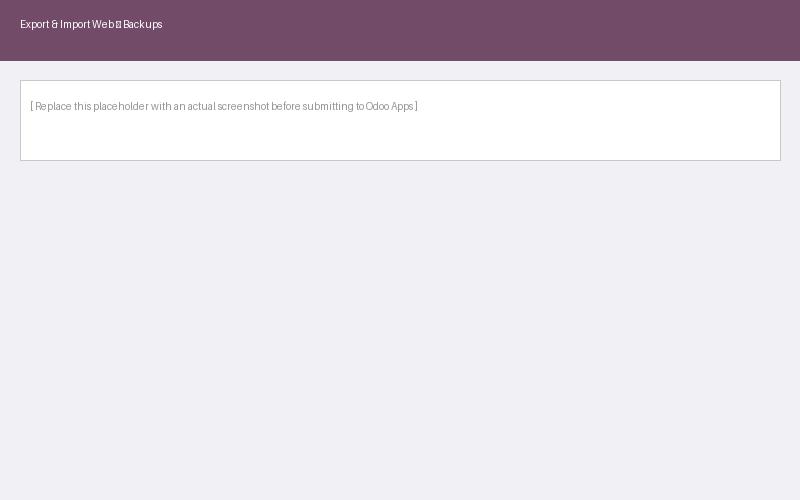

Backup and restore your entire Odoo website with one click. Export pages, menus, custom views, media, blog, events, and eCommerce catalog into a single portable ZIP file — then restore it anywhere with automatic ID remapping and safety snapshots.

Website → Export & Import Web → Backups
Website → Export & Import Web → Backups
Create and download backups, restore from history.
Website → Configuration → Settings
Configure size limits, retention policy, snapshot behaviour.
Select one or several websites, choose content groups, click Create Backup. A single ZIP is generated and downloaded to your browser.
Upload ZIP → preview → map each website to Replace or Create New → restore. All IDs and /web/image URLs are remapped automatically.
Before every Replace restore, an automatic snapshot is saved in the backup history so you can always undo.
Optionally include blog posts, event definitions, and eCommerce products with images and categories (auto-detected, requires the respective Odoo modules).
Backup multiple websites at once into a single ZIP. Restore each to a different target with per-website mode selection.
Checksums verified before restore. Zip Slip and zip bomb protection. Full rollback on failure — no partial writes.
Choose websites and content groups. Click Create Backup. ZIP is generated in the background.
Once done, click Download ZIP. Keep it safe — this is your portable backup file.
On any Odoo 17 instance: open Restore wizard, upload ZIP, preview, map websites, click Restore.